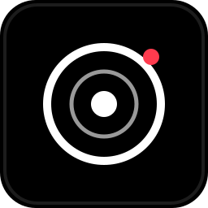

Everything works without a key. A free Windy key adds thousands of public city, beach and mountain webcams (very dense across France, including Pas-de-Calais), with live players. Get one in 1 minute at api.windy.com/keys (choose “Webcams API”).
Ethics: this app only shows cameras that their operators deliberately publish (road authorities, cities, tourism webcams listed on OpenStreetMap, Windy). It never scans for or lists private or unsecured cameras. Images remain the property of their operators.